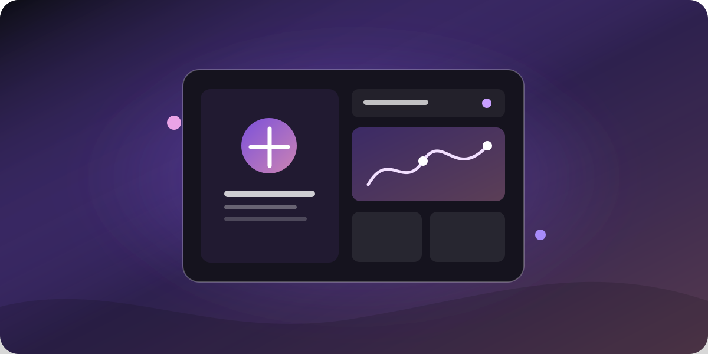

Do lado das empresas
Vaga aberta não pode esperar meses.
A busca por profissionais acontece espalhada entre plataformas, indicações e currículos sem contexto — e cada etapa sem sinal custa tempo e dinheiro.
Reunimos empresas, profissionais, capacitação e inovação em um único ecossistema — para que o talento certo encontre a oportunidade certa, e o próximo salto aconteça.
Indústrias precisam de pessoas preparadas. Pessoas buscam espaço para crescer. Entre um lado e o outro, informação se perde, processo demora e oportunidade passa.
A busca por profissionais acontece espalhada entre plataformas, indicações e currículos sem contexto — e cada etapa sem sinal custa tempo e dinheiro.
Sem rota clara entre aprender, praticar e se conectar a quem contrata, o esforço de estudar demora a se transformar em oportunidade real.
Um ecossistema desenhado para que cada etapa alimente a próxima — do primeiro contato ao crescimento sustentado.
Empresas apresentam contexto e encontram profissionais com evidências — não apenas currículos.
Trilhas práticas alinhadas ao que o mercado pede, no ritmo de quem aprende e trabalha.
Eventos, workshops, desafios e programas de inovação em um só calendário.
Progresso registrado vira portfólio e abre a próxima porta — para pessoas e empresas.
Menos ruído no processo. Mais evidência sobre cada pessoa — e uma proposta pensada para o volume de vagas do seu time.
Mostre cultura, desafios do time e o tipo de profissional que procura.
Conhecer a propostaExplore talentos com competências e aprendizados alinhados à sua necessidade.
Ver o espaço da empresaRegistre seu interesse e ajude a desenhar o modelo que faz sentido para o seu volume.
Registrar interesseDo primeiro módulo à próxima oportunidade: cada etapa constrói evidência do que você sabe fazer.
Conteúdo demonstrativo, desenhado para prática aplicada: aulas curtas, materiais de apoio e progresso salvo no seu navegador.

UX & produtoA arquitetura do ecossistema já reserva espaço para o que conecta indústria e talento além da aula: prática, comunidade e inovação.
Escolha o seu lado do ecossistema e dê o primeiro passo agora.